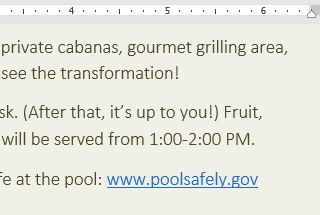
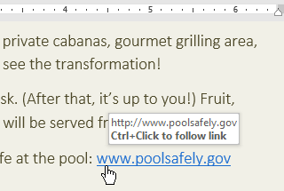
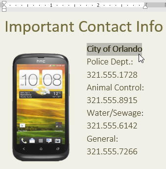
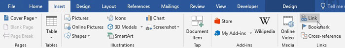
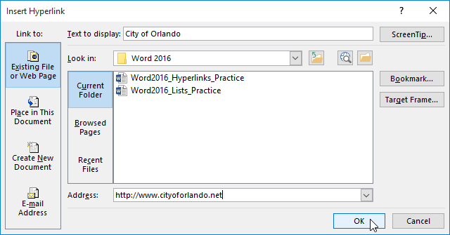
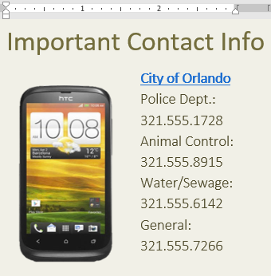
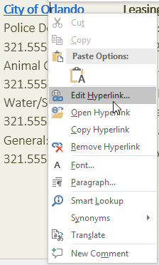
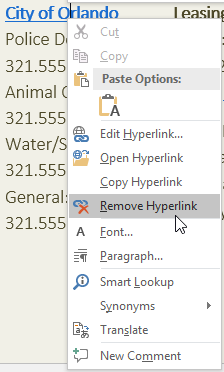
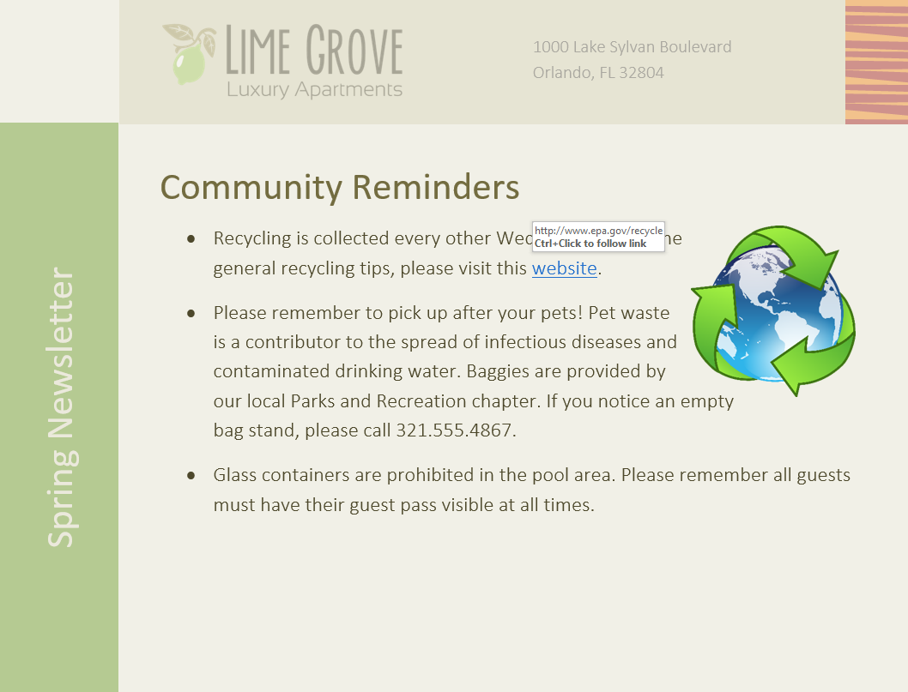

Lesson 11: links
Lesson 11: Links
/en/word/lists/content/
Introduction
Adding hyperlinks, also known as links, to text can provide access to websites and email addresses directly from your document. There are a few ways to insert a hyperlink into your document. Depending on how you want the link to appear, you can use Word's automatic link formatting or convert text into a link.
Watch the video below to learn more about hyperlinks in Word.

Understanding hyperlinks in Word
Hyperlinks have two basic parts: the address (URL) of the webpage and the display text. For example, the address could be http://www.popsci.com, and the display text could be Popular Science Magazine. When you create a hyperlink in Word, you'll be able to choose both the address and the display text.
Word often recognizes email and web addresses as you type and will automatically format them as hyperlinks after you press Enter or the spacebar. In the image below, you can see a hyperlinked web address.

To follow a hyperlink in Word, hold the Ctrl key and click the hyperlink.

To format text with a hyperlink:
- Select the text you want to format as a hyperlink.

2. Select the Insert tab, then click the Link command.
You can also open the Insert Hyperlink dialog box by right-clicking the selected text and selecting Link... from the menu that appears. 3. The Insert Hyperlink dialog box will appear. Using the options on the left side, you can choose to link to a file, webpage, email address, document, or a place in the current document. 4. The selected text will appear in the Text to display: field at the top. You can change this text if you want. 5. In the Address: field, type the address you want to link to, then click OK.

6. The text will then be formatted as a hyperlink.
After you create a hyperlink, you should test it. If you've linked to a website, your web browser should automatically open and display the site. If it doesn't work, check the hyperlink address for misspellings.
Editing and removing hyperlinks
Once you've inserted a hyperlink, you can right-click the hyperlink to edit, open, copy, or remove it.

To remove a hyperlink, right-click the hyperlink and select Remove Hyperlink from the menu that appears.

Challenge!
- Open our practice document.
- Scroll to page 4.
- In the first bullet point under Community Reminders, format the word website as a hyperlink to http://www.epa.gov/recycle.
- Test your hyperlink to make sure it works.
- In the second bullet point, remove the hyperlink from the words Parks and Recreation.
- When you're finished, your page should look something like this:

/en/word/page-layout/content/